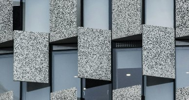

학부장 CHAIR
김우철Woochul Kim
에너지·열유체
홈 › 학부소개
About
SINCE 1958YONSEI MECHANICAL ENGINEERING
About
연세대학교 기계공학부는 역학·소재, 에너지·열유체, 로보틱스·제어, 설계·제조, 마이크로·나노, 바이오·포토닉스에 이르는 폭넓은 분야에서 세계적 수준의 교육과 연구를 수행합니다. 창의적 사고와 도전정신을 바탕으로 종합 설계 능력을 갖추고, 글로벌 사회에 유익한 가치를 창출하는 인재를 양성합니다.

Education
기독교 정신에 기하여 학술의 심오한 이론과 광범 정치한 응용방법을 교수 연구하며 국가와 인류 사회 발전에 공헌할 지도적 인격을 도야함을 목적으로 한다.
창의적 사고와 도전정신을 바탕으로 종합 설계 능력을 갖추고 글로벌 사회에 유익한 가치를 창출 할 수 있는 인재 양성
교육과정 상세는 교육 페이지를 참조하세요.
Organization
History
학부 공식 홈페이지 연혁을 그대로 옮겼습니다.
Contact
연락처
지하철
2호선 신촌역 2번 출구(연세대학교 · 세브란스병원) · 3번 출구(연세대학교 · 이화여자대학교)
버스
연세대학교 · 연세대학교앞 중앙차선
정류장별 전체 노선은 연세대학교 오시는 길 에서 확인할 수 있습니다.
입학 안내
학부 입학부터 대학원 진학까지, 지원 절차와 장학·진로 정보를 안내합니다.